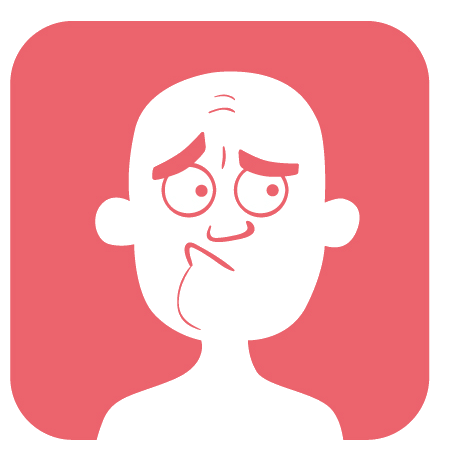
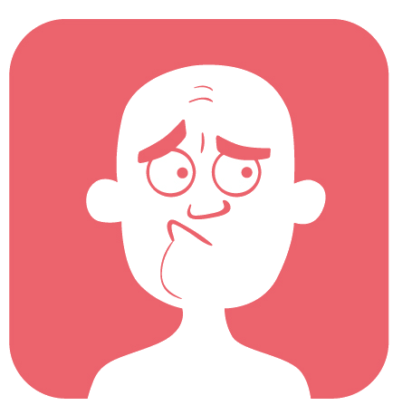

{%endif%}
{% if idCuest==5 %}
¡ Accione el avatar ! y elija cual de las opciones es la correcta.
El avatar se acciona dándo click encima. {% endif %} {%if pos == 2 and mensaje == '' and siguiente == 1%}
Este segundo se resuelve de igual forma que el primero.
Recuerde: el avatar se acciona dándo click encima. {% endif %} {%if pos > 2 and mensaje == '' and siguiente == 1%}
Responda correctamente este ítem, se responde igual a los anteriores. {% endif %} {% elseif siguiente == 0%} {% if mensaje == 'CORRECTO' %}
Ha respondido correctamente, presione continuar para ir por más
{% elseif mensaje == 'INCORRECTO'%}

No ha respondido correctamente, recuerde {{retro}}, tal vez en el siguiente le vaya mejor.
{% endif %} {%elseif siguiente == 2 and mensaje == 'CORRECTO' %}
¡Excelente esta última!
Ha respondido correctamente
ha tenido un total de {{conteoCorrectos}} ítems acertados y un total de {{conteoErroneo}} ítems erróneos
{%elseif siguiente == 2 and mensaje == 'INCORRECTO' %}
¡Algo no estuvo bien en esta última!
No ha respondido correctamente, recuerde {{retro}}, puede volver a hacer la actividad.
ha tenido un total de {{conteoCorrectos}} ítems acertados y un total de {{conteoErroneo}} ítems erróneos
{% endif %} {% endif %}
{% endblock %}
LIBRO: {{titulo}}
{{pos}}
{%if pos == 1 and mensaje == '' and siguiente == 1%}¡ Accione el avatar ! y elija cual de las opciones es la correcta.
El avatar se acciona dándo click encima. {% endif %} {%if pos == 2 and mensaje == '' and siguiente == 1%}
Este segundo se resuelve de igual forma que el primero.
Recuerde: el avatar se acciona dándo click encima. {% endif %} {%if pos > 2 and mensaje == '' and siguiente == 1%}
Responda correctamente este ítem, se responde igual a los anteriores. {% endif %} {% elseif siguiente == 0%} {% if mensaje == 'CORRECTO' %}
¡EXCELENTE!
Ha respondido correctamente, presione continuar para ir por más
{% elseif mensaje == 'INCORRECTO'%}

¡Algo no estuvo bien!
No ha respondido correctamente, recuerde {{retro}}, tal vez en el siguiente le vaya mejor.
{% endif %} {%elseif siguiente == 2 and mensaje == 'CORRECTO' %}
¡Excelente esta última!
¡con esta finaliza la actividad!
Ha respondido correctamente
ha tenido un total de {{conteoCorrectos}} ítems acertados y un total de {{conteoErroneo}} ítems erróneos
{%elseif siguiente == 2 and mensaje == 'INCORRECTO' %}
¡Algo no estuvo bien en esta última!
¡con esta finaliza la actividad!
No ha respondido correctamente, recuerde {{retro}}, puede volver a hacer la actividad.
ha tenido un total de {{conteoCorrectos}} ítems acertados y un total de {{conteoErroneo}} ítems erróneos
{% endif %} {% endif %}